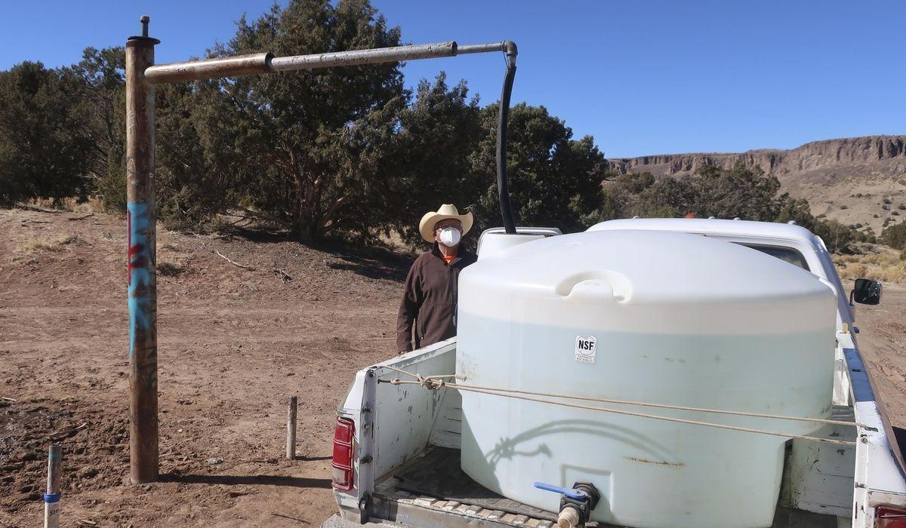

Supreme Court makes Navajo Nation's fight for more water harderSALT LAKE CITY — On some parts of the Navajo Nation, where roughly a third of the people lack reliable access to clean water, people have to drive for miles on red dirt roads to lug water home. Others rely on unregulated wells or water delivery trucks. Already facing some of the most severe water scarcity in the drought-stricken Southwest, the tribe now has to deal with a Supreme Court ruling this week that will make securing water even harder for the 170,000 enrolled tribal members who live on its reservation. “I know the battle and the strategy moving ahead is going to be a lot more difficult,” Navajo Nation President Buu Nygren told The Associated Press. The tribe argued that the “permanent home” promised in treaties the U.S. government signed more than 150 years ago includes a right to some of the water crossing the reservation. The question before the court was whether the federal government had to quantify the tribe’s water needs and come up with a plan to meet them. Two decades after the Navajo Nation sued the federal government to force them to act, their frustrating, meandering journey through the federal courts ended with the 5-4 decision authored by Justice Brett Kavanaugh, saying an 1868 treaty “contains no language imposing a duty on the United States to take affirmative steps to secure water for the Tribe.” The decision is a win for states that rely on the Colorado River, which cascades down from the Rocky Mountains through southwestern U.S. deserts. So much water is siphoned off that it rarely reaches Mexico’s Gulf of California anymore. The ruling maintains the status quo in already difficult negotiations brokered by the Biden administration over how to share the river’s shrinking flows. Arizona - joined by Nevada and Colorado - argued that requiring them to accommodate the Navajo Nation’s water needs would upend future negotiations over water for 40 million people and a $15 billion-a-year agricultural industry that grows most of the nation’s winter vegetables. But it leaves the tribe at a serious disadvantage. “Where do the Navajo go from here?” Justice Neil Gorsuch wrote in the dissent. They “have waited patiently for someone, anyone, to help them, only to be told (repeatedly) that they have been standing in the wrong line and must try another.” As a result of the ruling, if the Navajo Nation wants access to water from the lower Colorado River, Congress must act or the tribe needs to ask the Supreme Court to reopen a prior case that allocated water between states, said attorney Rita McGuire, who represented southwestern states that opposed the tribe. “We’re very pleased,” she said. Gorsuch found one “silver lining,” writing that the majority did agree that the Navajo Nation may be able to assert such a claim. “After today, it is hard to see how this Court (or any court) could ever again fairly deny a request from the Navajo to intervene in litigation over the Colorado River,” he wrote. This case was just one of many legal challenges to agreements over water rights on the Colorado River established more than a century ago. The Navajo Nation and other tribes were left out of a landmark 1922 treaty that divided the Colorado River between seven U.S. states, and have long protested that states treat them as an afterthought at at time when all the stakeholders face a future with less water and greater demand. The National Congress of American Indians President Fawn Sharp said the justices helped the federal government escape its promises to tribes “by stating that treaties only secure access to water, but do not require the United States to take any steps to protect or provide that water to our people.” Kavanaugh said Congress could still help the Navajo Nation. Congress has allocated billions to help tribes secure water rights and build infrastructure to reliably deliver clean water to their people. But Congress is unlikely to help the tribe, according to Grant Christensen, an Indian law expert at Stetson University. “There’s not enough water now,” Christensen said. “Congress isn’t going to take further steps to go ahead and secure Indian water rights away from the neighboring states.” And supplying water across the Navajo reservation is particularly challenging because of its arid environment and the great distances involved - it’s the largest in the U.S. at 27,000 square-miles (71,000 square-kilometers) - an area larger than West Virginia. The Navajo Nation has already reached settlements for water from the San Juan River in New Mexico and Utah. Now it will focus on settling water rights over a Colorado River tributary in Arizona while that case proceeds in court, Nygren said. It’s a familiar position for tribes, said Heather Tanana, a University of Utah law professor and citizen of the Navajo Nation. “No one’s contesting that Navajo Nation has those rights” to water, she said. “But in order to actually make them a reality, they’re on their own.” • Associated Press reporter Jessica Gresko in Washington contributed to this story. Phillis reported from St. Louis. Please read our comment policy before commenting. |
 |